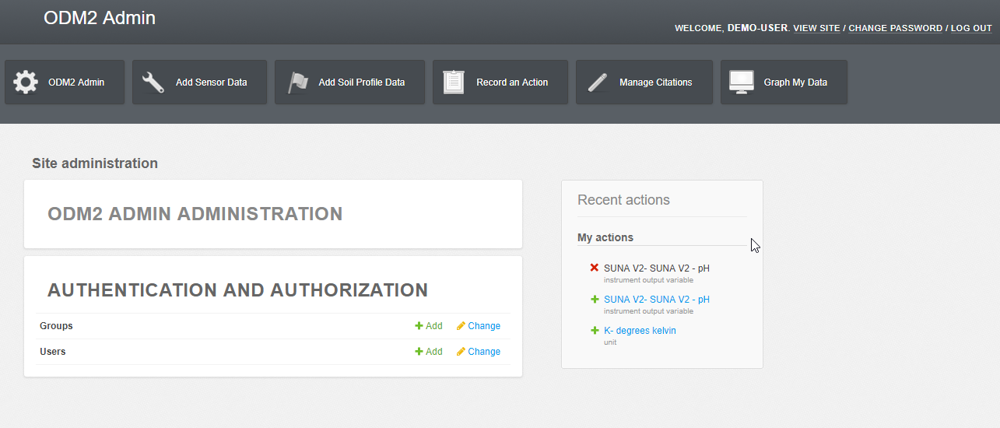
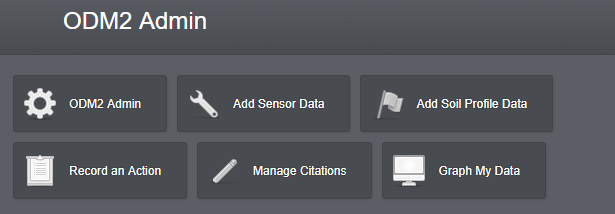

ODM2 Admin Demo¶
Below is a tutorial which explains many of the features of ODM2 Admin. Links contained here access a Demonstartion version of ODM2 Admin, the ODM2 Admin sandbox hosted by CUAHSI. If you would like access to the sandbox please email leonmi@sas.upenn.edu
login to the sandbox here: https://dev-odm2admin.cuahsi.org/Sandbox/
After logging in you will see the ODM2 Admin Home page:
This page consists of several parts, links to log out and change your password, the ODM2 Admin Shortcuts, ODM2 Admin administration, authentication and authorization, and recent actions.
ODM2 Admin Shortcuts¶
Upon logging into ODM2 Admin you will see the below navigation shortcuts across the top.
- The first shortcut, displayed here as ‘ODM2 Admin’ with a cog icon, provides a list of all of the ODM2 pages.
- The second, ‘Add Sensor Data’, provides links to where you should enter information if you are trying to add new sensor data or you want to make changes to information relavent to sensor data.
- Third, ‘Add Soil Profile Data’ provides links for adding or editing Profile result data.
- Fourth, ‘Record an Action’, provides links for adding or editing actions and methods ( standarized method for how to perform an action).
- Fifth, Manage Citations, provides links for managing and exporting citations.
- Sixth, Graph My Data, provides links for data plotting and a map of your sites.
The ODM2 Admin Administration link will take you to a list of all 44 ODM2 entities that can be directly managed using ODM2 Admin. Additional entities exist within the ODM2 information model these need to be managed with another tool Such as with the ODM2PythonAPI. Django models exist for each ODM2 entity so it is also possible to write Python scripts using the Django Object relational mapper. See Managing ODM2 With The Django ORM for details on using the Django ORM with ODM2 databases.